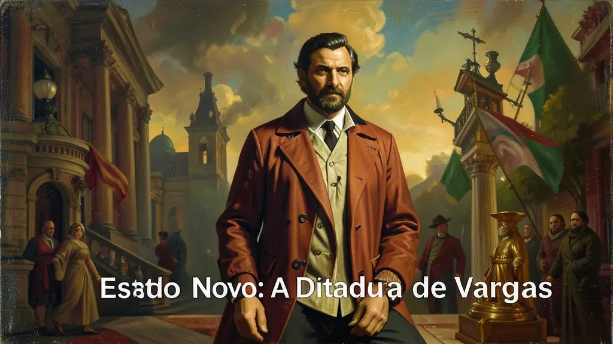
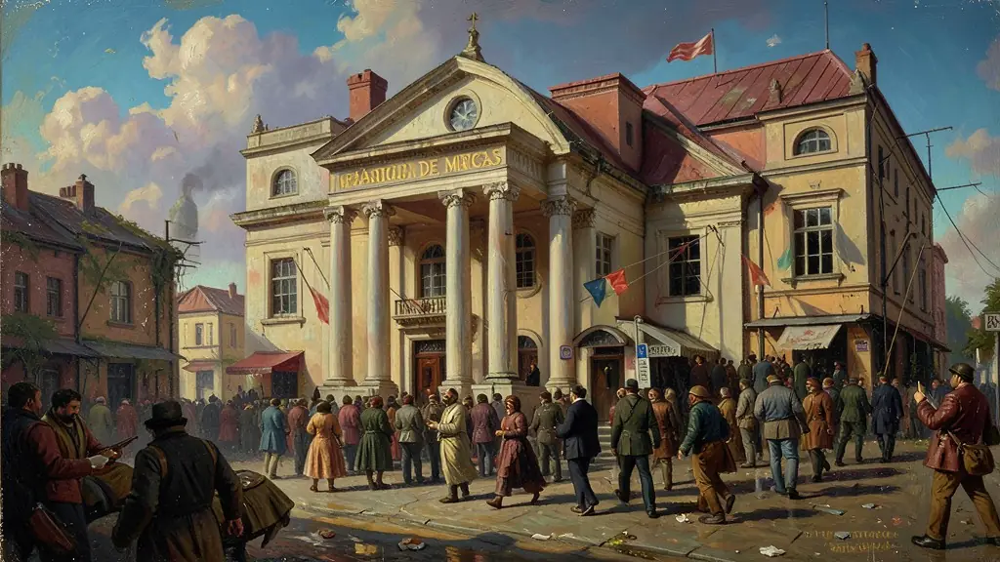
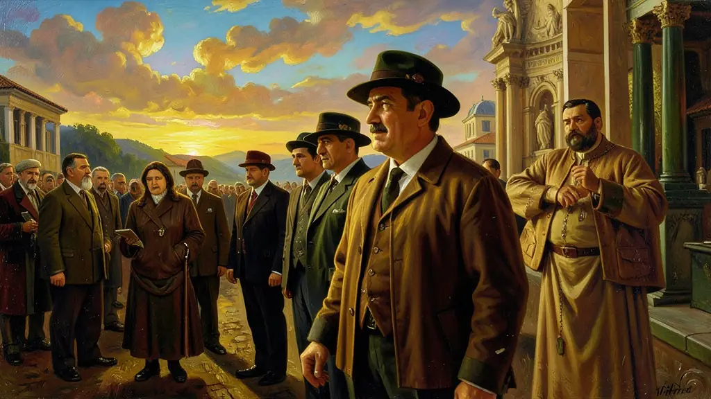

Capítulo 01
1. O Golpe do Plano Cohen (1937)
Getúlio precisava de um susto para o povo aceitar a ditadura. O capitão Olímpio Mourão Filho redigiu um plano fantasioso de invasão comunista, com queima de igrejas e massacres em massa. Vargas leu o plano no rádio como se fosse verdade. O povo, com medo, aceitou o fechamento do Congresso Nacional e a supressão das liberdades individuais. Estava fundado o Estado Novo sobre uma mentira estratégica.

Capítulo 02
2. DIP: A Fábrica de Mitos
O Departamento de Imprensa e Propaganda (DIP) era onipresente. Fiscalizava os jornais, o cinema, o rádio e os livros escolares. Criou a imagem de Vargas como um 'vovô bondoso' que cuidava de todos. O programa 'Hora do Brasil' era obrigatório e educativo, ensinando o povo a amar a pátria e a respeitar o governo. Quem criticava Vargas era preso pela polícia secreta de Felinto Müller.

Capítulo 03
3. Nacionalismo Econômico e CSN
Para Vargas, um país sem aço não era independente. Ele negociou com os EUA o apoio na 2ª Guerra em troca de financiamento para construir a Companhia Siderúrgica Nacional em Volta Redonda. O Estado Novo foi o momento em que o Brasil parou de importar quase tudo para começar a fabricar seus próprios trilhos e motores. Era o desenvolvimento 'de dentro para fora'.

Capítulo 04
4. CLT: O Presente do Pai para os Filhos
Em 1943, Vargas reuniu as leis trabalhistas no estádio de São Januário. Ao dar férias, jornada de 8 horas e previdência, ele dizia ao operário: 'Não siga os comunistas, eu cuido de você'. A CLT serviu para dar dignidade ao trabalhador, mas também para amansar os sindicatos, que passaram a ser controlados pelo governo (os sindicatos pelegos).
Capítulo 05
5. O Fim: O Dilema dos Pracinhas
A FEB (Força Expedicionária Brasileira) lutou na Itália para derrubar a ditadura de Mussolini. Ao voltarem vitoriosos, os soldados perguntaram: 'Por que lutar pela democracia lá fora e aceitar a ditadura de Vargas aqui dentro?'. O prestígio dos militares cresceu e o de Vargas caiu. Sentindo o fim, ele tentou o movimento 'Queremismo' (queremos Getúlio), mas os militares o depuseram sem derramamento de sangue em 1945.
Com a outorga inescrupulosa do farsante refratário ardil documento conspiracionista da falsa invasão russa na calada ('Plano Cohen'), Getúlio esmagou o tenso sufrágio estuprando violentamente as garantidas republicanas promulgadas e estabeleceu no despótico 1937 o absolutista dantesco Estado Novo, formatado em minúcias copiadas da autoridade fascizante europeizada impiedoca encarnada na infame constituição refratária 'Polaca' sob o ditame castrador executivo unitário das garantias cerceadas de liberdades essenciais silenciadas e de partidarismos proscritos.
Fundamentou em bases irrevogável o alicerce industrial de massiva pesada burocracia executiva sob os imperativos desenvolvimentistas de agências formuladoras governamentais englobantes nas autarquias formatadoras encorpadas de conselhos nacionalistas indutores primordiais monopolistas pesados desenvolvimentistas alicerçadas nas colossais erguidas da siderurgia bélica Companhias centralizadas Siderúrgicas basilar da era motora da alavancagem nacional (Fundação da CSN em encruzilhada geopolítica pendular astuta no alinhamento do conflito bélico de base aliancistas yankees contra a cobiça eixoista hitleriano).
Ao examinar profundamente essa quadra autocrata brutal exige notar categoricamente a balança entre opressão indissociável sanguinolenta na perseguição implacável no tenebroso presídio na mordaças e cerceio das mordaças literária na imprensa via a lavagem de massas do colossal DIP contrapesado cinicamente astutamente no paternalismo operariado atado nas legislações unificadores protecionistas da unificadas e engessadoras outorgada CLT enredando o silenciado movimento engessado e tutelado sem contestações na benesses na figura do grande patrono na idolatrada presidência messianica inquestionável do ditador popular.
Fonte: GOMES, Angela de Castro. A Invenção do Trabalhismo. Editora FGV, 2005.
Atividades interativas
Questões para fixar
O DIP (Departamento de Imprensa e Propaganda) foi um órgão central do governo Vargas durante o Estado Novo. Qual era sua função principal?
A Consolidação das Leis do Trabalho (CLT), outorgada em 1943, é vista pelos historiadores contemporâneos não apenas como uma conquista operária, mas também como: